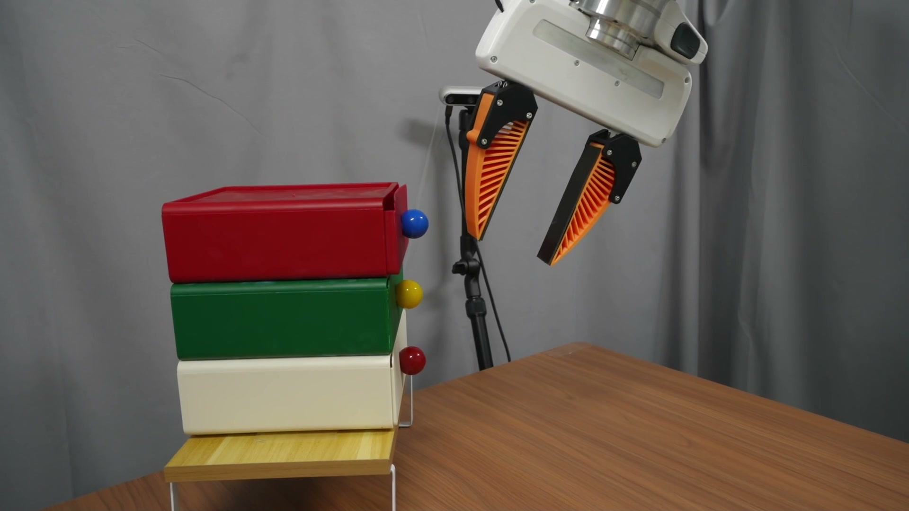
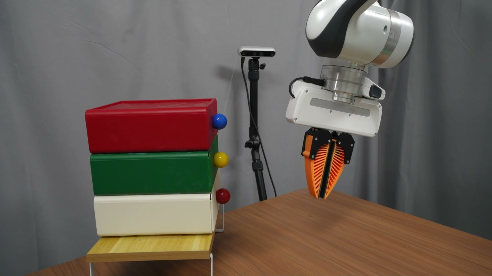
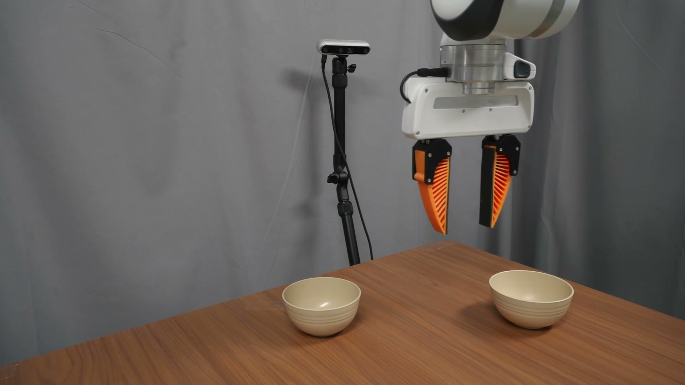
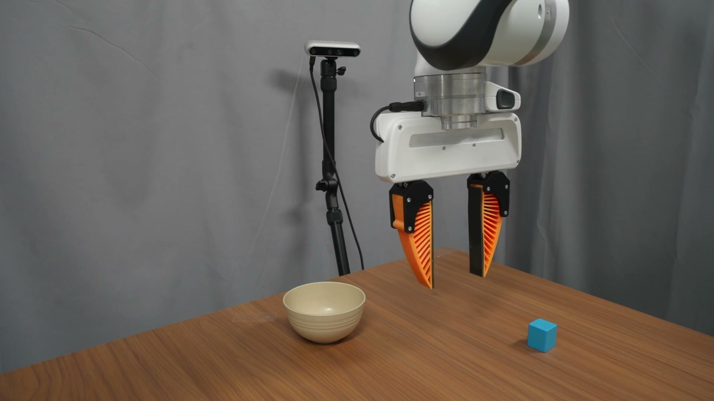

Pre-training
Learn the representation
Infer latent actions from consecutive video frames with an inverse dynamics model.
Video → latent actionAn empirical study of robot learning
Learning actions from videos is promising.
We study what actually makes it work.

Close drawer ↗
Open drawer ↗
Stack bowls ↗
Place block ↗A compact representation. A stronger initialization.
01 / The study
One common framework to understand how latent actions are learned, evaluated, and used.
Large-scale video data contain rich information about how the world changes, but usually lack robot action labels. Latent action models learn compact representations of these transitions, creating a bridge between abundant videos and scarce robot demonstrations.
We unify representative methods in a common autoencoding framework and investigate 41 unique design choices across modeling paradigms, learning objectives and regularization, and integration strategies. We evaluate them on LIBERO, LIBERO-Plus, and RoboTwin2.0, then validate latent-action backbone tuning on a real Franka Panda robot.
Pre-training
Infer latent actions from consecutive video frames with an inverse dynamics model.
Video → latent actionMid-training
Annotate videos with latent actions and use them to fine-tune the vision-language model.
Latent action → VLMPost-training
Use robot demonstrations to adapt the tuned backbone to downstream manipulation.
VLM → physical actionLatent Action Models (LAMs) have emerged as a promising paradigm for enabling robot learning to leverage large-scale unlabeled videos through latent actions that serve as compact surrogates for physical actions. Despite rapid progress, research on LAM remains highly fragmented, with existing methods evaluating different design choices in isolation under inconsistent experimental settings, making it difficult to identify the factors that truly determine downstream robotic manipulation performance. In this work, we present the first comprehensive empirical study of latent action learning for robotic manipulation. We unify representative LAM methods within a common autoencoding framework and systematically investigate 41 LAM design choices across three dimensions, including latent action modeling paradigms, learning objectives and regularization methods, and latent action integration strategies. We further examine four proxy metrics for evaluating latent action quality and assess their ability to reliably predict downstream robotic manipulation performance. Extensive experiments on three widely used benchmarks provide strong empirical evidence that fine-tuning vision-language model (VLM) backbones with latent actions provides a stronger initialization for downstream policy learning, with further validation on real-world robot manipulation tasks.
02 / What matters
Explore the evidence behind the design recommendations.
Q1 / Modeling paradigms
LAPO achieves the highest overall mean success rate across the three benchmarks and five integration strategies. It learns directly from raw video, without extra preprocessing. Semantic feature differences (ΔDINO) are a competitive alternative.
Q2 / Regularization
Well-tuned continuous regularizers perform similarly. VAE is a practical default; VQ-VAE achieves the strongest average LIBERO-Plus result within the regularization comparison.
Q3 / Action integration
Preserve latent actions as an intermediate representation. Overall mean: 71.14%, versus 70.00% for DAP.
Retain the jointly tuned backbone and train a new LAP head. Overall mean: 72.12%.
Both settings use robot action annotations for downstream policy learning. Means equally weight 12 configurations and three benchmarks; individual winners differ.
Q4 / Proxy metrics
FDM reconstruction metrics tend to reflect downstream success more consistently than action-recovery probes. They are useful for coarse screening, but do not reliably identify the best-performing model.
Use SSIM Gain and MSE Gain alongside negative Linear and MLP probe losses. Prefer comparisons at the same latent dimensionality, and validate promising models on downstream tasks.
Q5 / Dimensions & normalization
A latent dimensionality of 32 achieves the highest average performance across the evaluated benchmarks. The best dimension differs by benchmark: 16 for LIBERO, 8 for LIBERO-Plus, and 32 for RoboTwin2.0.
With appropriate regularization, additional normalization generally does not help. Unnormalized latents improve 28 of 33 method–benchmark combinations, with an average gain of 1.15 percentage points.
Q6 / Stage-II corpus expansion
Adding OXE videos to the Robotwin + liberoplus mixture improves downstream results on all three benchmarks for both DAP and LAP, while keeping the Stage-III setup fixed.
03 / The evidence
Compare every modeling paradigm and regularizer across all five integration strategies. Values below reproduce Table 1 of the manuscript.
| Method | DAP | LAP | JAP | JAP-DAP | JAP-LAP | Avg. |
|---|
Highlighted average: best within each design group. Avg. is the paper-reported mean over five strategies.
Table 1 · CSV ↓Controlled setup. Qwen3-VL-4B backbone with OpenVLA-OFT. Front-view observations only; no joint states, wrist views, or data augmentation. Ablations are averaged over three random seeds.
Benchmarks. Four LIBERO suites; the same suites under RobotInit perturbations in LIBERO-Plus; 12 selected RoboTwin2.0 tasks, each in easy and hard modes.
LIBERO-Plus scope. Stage-III policy training uses LIBERO only; liberoplus videos are available in Stages I and II. Zero-shot refers to deployment under RobotInit after Stage III.
Integration. DAP predicts physical actions directly. LAP uses intermediate latent actions. JAP predicts both jointly. JAP-DAP / JAP-LAP train a fresh head on the jointly tuned backbone.
04 / Beyond simulation
Same robot demonstrations. Same downstream training.
A backbone initialized with latent actions.
Aggregated over four tasks and five checkpoints, with 20 trials per task at each checkpoint. Both models train on the same combined set of 200 demonstrations.
Demonstration clips are independent recordings; paired playback does not imply frame alignment. Disturbance recovery is a qualitative demonstration.
Real-world configuration: LAPO · VAE (10−7) · dz = 32 · unnormalized latents · DAP. The two models differ in the VLM backbone parameters used to initialize Stage III.
05 / Continue exploring
Read the work, inspect the evidence, and build on the findings.
The public arXiv preprint.
02 ↗Training and evaluation implementation.
03 ↗Latent action model resources.
04 ↗Real-world Franka demonstrations.
Explore 29 experiment labels and 17 proxy metrics with interactive correlations, scatter plots, and exports.
@article{bu2026whatmatters,
title={What Matters for Latent Actions in Robot Learning},
author={Bu, Xizhou and Hu, Qingda and Zhou, Lei and Zhang, Lingfeng
and Tang, Yingbo and Liu, Zihao and Tao, Xinyi and Ma, Zhiqiang
and Huang, Qingqiu and Tang, Chufeng and Wang, Hongbo and Zhang, Jing
and Ma, Jiayi and Ye, Hangjun and Li, Wei and Hao, Xiaoshuai},
journal={arXiv preprint arXiv:2608.19613},
year={2026},
url={https://arxiv.org/abs/2608.19613}
}